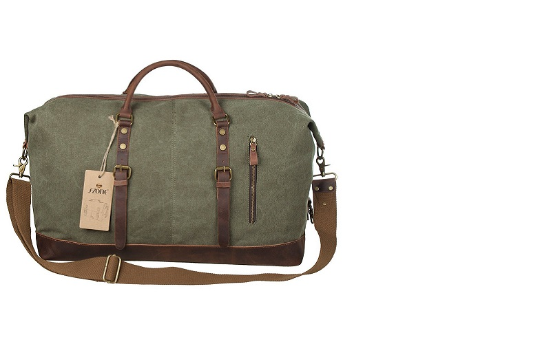
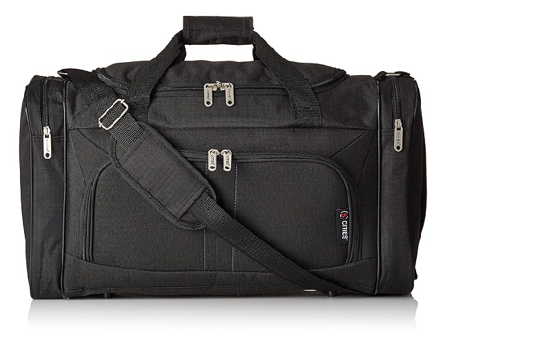
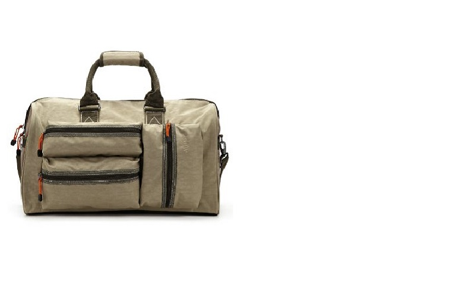
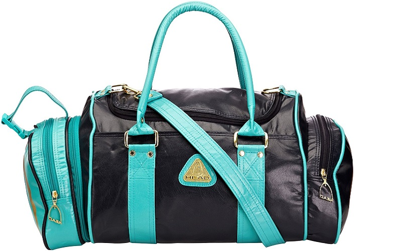
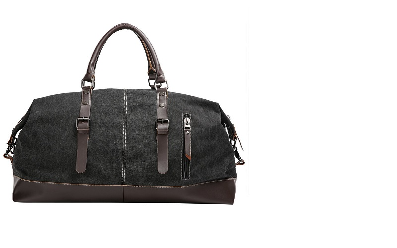
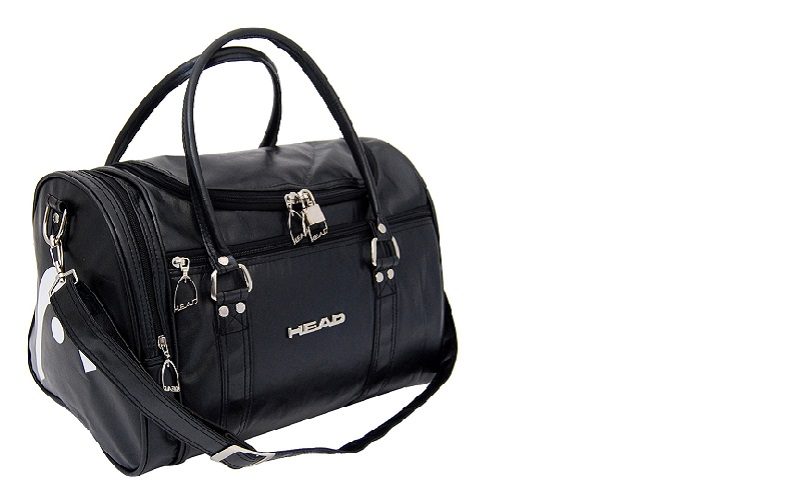
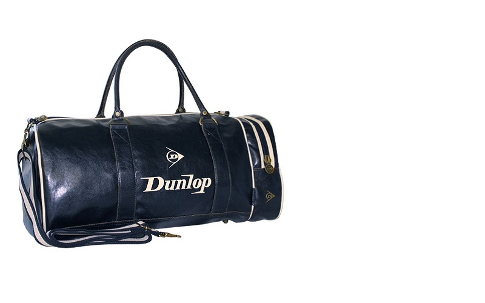
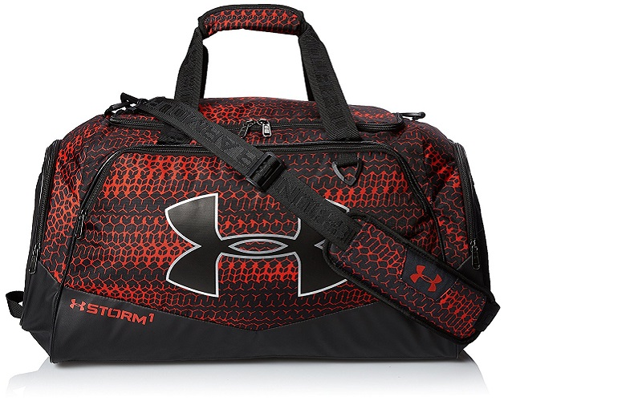

Our pick: S-ZONE Canvas Leather Travel Duffle
Compared with similarly priced duffel bags, our pick better balances comfort, durability, and versatility. This S-ZONE duffel bag is very stylish, strong, durable, and can fit plenty of stuff. We particularly love how well made the bag is and the superb quality of the materials and stitching.

Budget pick: 5 Cities Lightweight Duffel Holdall
If you want something to get your gym clothes from point A to point B for the least amount of money and you don't need a high quality product, the 5 Cities duffel bag might suit your needs. It can fit all of your stuff and offers better organisation than most duffel bags in this price range. However, its low price is evident in the lower quality materials and uninspiring look.
For travel, business or leisure, the single most important thing is that your duffel bag must fit all of your belongings. For most people we would recommend a bag with a size of at least 30 litres, which is more than enough to fit all of your gym stuff or a everything you need for a weekend getaway. But what makes a great duffel bag? To answer this question, we went through hundreds of products reviews and the analysis revealed that the following features separate a good suitcase from a great one:
The analysis also revealed the things to watch out for when selecting your new duffel bag. Whilst none of these are deal-breakers, they are all things that can easily be avoided by carefully selecting your bag.
There are hundreds of duffel bag options on Amazon, even after filtering for the basic criteria that we use. We compiled a database of 1,000+ verified customer reviews of carry-on suitcases, which we then analysed to narrow down the list. The analysis revealed what features people personally find to be vital, as well as what attributes separate a great duffel bag from an average one. It also allowed us to better understand the differences in size, fabric materials, interior designs, and handle models. Based on this, and coupled with our own extensive research of editorial reviews, we settled on our top picks.

Antler Travel Duffle Urbanite Holdall, 48 litres
This Antler travel duffel offers a great array of pockets and compartments, as well as a very robust exterior made from strong fabrics to take your toughest journeys. It comes in Stone and Navy colours, both of which look amazing.

Head Retro St Tropez Holdall, 46 litres
HEAD has brought back the original 1980s classic version of this stylish duffel bag, which is still a great combination of fashion and function. Features include a main compartment with lockable zips, a front zip compartment, and a detachable and adjustable shoulder strap with metal fastenings. Best of all, it has a detachable pocket to put in toiletries, which creates a mini handbag perfect for hand luggage only flights.
S-ZONE Mens Canvas Leather Holdall, 30 litres
The S-ZONE canvas leather duffel bag is a very well made, strong and robust weekend bag. It offers plenty of space inside, secured by a sturdy zip, it’s incredibly lightweight, and has a number of handy compartments and pockets. The bag is very durable and will outlast a fair amount of weekend trips.

Eshow Men's Canvas\Nylon Retro, 43 litres
This retro Eshow duffel bag not only looks very stylish but also offers a clever and functional design. It has clever inside compartments and well-padded shoulder straps for comfort. The stitching is superb throughout and the bag is made from a very impressive fabric which is incredibly soft. This duffel is very well made and durable; excellent value for money.

Eastpak Travel Duffle Station, 57 litres
Practical and timeless, the Eastpak Station bag is ready for anything, featuring both outside and inside zippered pockets so you can always find your essentials. The comfy padded shoulder strap is adjustable and can be removed to give the comfort and look that you want. The bag is pretty much indestructible and will probably last you a lifetime. Worth every penny.

Head St Moritz Holdall, 25 litres
This HEAD holdall bag is great for overnight stays or as a gym bag. It is big enough to hold your gym shoes, workout clothes, shampoo and body lotion and it easily fits into your locker. The two side pockets are very handy. The bag is also great for holidays: it can hold your beach towel, books, swimming trunks and goggles with room to spare.
5 Cities Lightweight Hand Luggage Cabin Sized Sports Duffel Holdall, 32 litres
If you are looking for a low cost option, this 5 Cities duffel offers really good value for money. It can be used as a carry-on cabin bag or a sports gym bag. It fits the cabin perfectly and you can quite easily fit your whole summer wardrobe in it. On top of all that, the duffel is incredibly lightweight and comfortable to hold.

Dunlop Retro Gym Hold all Sports Weekend Barrel Shoulder Bag, 32 litres
If you're into retro and vintage stuff, this Dunlop holdall is perhaps for you. It's perfect for regular gym goers or other sorts of daily usage as the bag is really sturdy and has strong zips that lasts a very long time. It has an adjustable shoulder strap or can be carried with small handles; a small separate zip compartment on one end; and the interior lining has a secure zip pocket for valuables and a place just for your phone. It also has metal studs on the bottom to protect the bag.

Under Armour Undeniable Duffel II Multi Sports Travel Bag Luggage, 36 litres
This Under Armour duffel bag can really take care of your kit: it is lightweight, very durable and water resistant. It has a spacious main compartment, where you will have plenty of room to store all your essential items whether it be boots, clothing, towels or anything else you need. It also has a very convenient zipped pouch which is very handy for taking care of loose change, keys and your mobile. On top of all that, it has well zipped pockets over each end and one along the side, plus a mesh compartment to take care of water bottles, snacks or anything of little value for which you need quick and easy access.